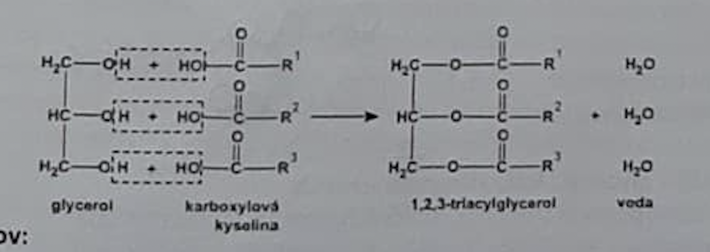
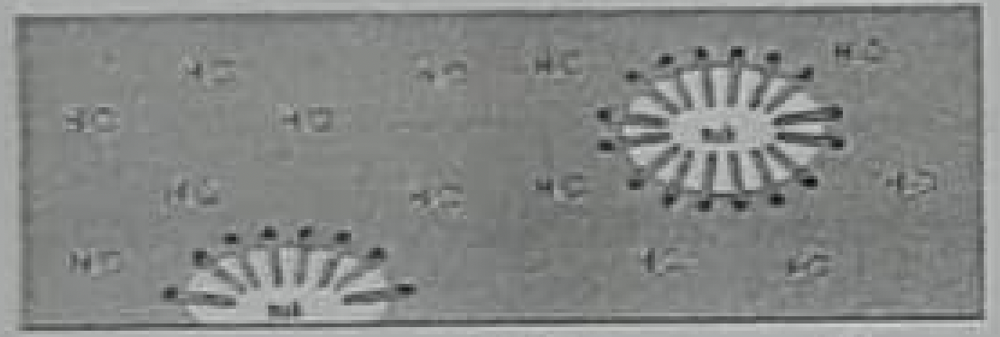
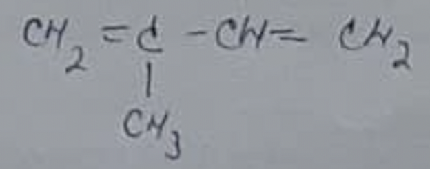

Lipidy - veľká heterogénna skupina prírodných látok,
definovaná neurčito
ako látky rozpustné v organických rozpúšťadlách a nerozpustné vo vode
1. jednoduché - a) acylglyceroly - tuky a oleje
b) vosky
2. zložené - a) fosfolipidy
b) glykolipidy
3. izoprenoidy - a) terpenoidy
b) steoridy
Význam lipidov:
→ stavebná zložka biomembrán
→ zásobáreň E - najefektívnejšia
- ich oxidáciou sa získa
takmer dvojnásobné množstvo E ako pri oidácii sacharidov
→ ochrana orgánov
→ tepelná izolácia
→ hydrofóbne vlastnosti
- vytvárajú prostredie, v ktorom sa rozpúšťajú nepolárne látky - vit. DEKA, hormóny, liečivá
→ medzi lipidy zaraďujeme niektoré hormóny, vitamíny, pigmenty, kofaktory enzýmov
1) JEDNODUCHÉ LIPIDY
a) Acylglyceroly
-neutrálne tuky, estery VMK a trojsýtneho alkoholu glycerolu (propán -1,2,3-triol)
(tuhé tuky) Nasýtené VMK - C15H31COOH - kyselina palmitová
- C17H35COOH - kyselina steárová
(oleje, esenciálne) Nenasýtené VMK - C17H33COOH - kyselina olejová
- C17H31COOH - kyselina linolová
- C17H29COOH - kzselina linolénová
Nenasýtené VMK, ktoré obsahujú 2 a viac 2-itých väzieb sú pre človeka
esenciálne = nepostrádateľné
- organizmus ich nedokáže syntetizovať,
preto ich musí prijímať v potrave.

Syntéza acylglycerolov:
Rozdelenie acylglycerolov:
a) Podľa skupenstva pri izbovej teplote:
tuhé = tuky - estery sú prevažne nasýtených VMK
tekuté = oleje - estery prevažne nenasýtených VMK
b) Podľa pôvodu:
rastlinné - slnečnicový, makový, sezamový, tekvicový, repkový ... olej
živočíšne - bravčová masť, maslo, rybí tuk, loj
získavanie rastlinných olejov - lisovaním, vhodnejšie je za studena - vyššia biologická hodnota
získavanie živočíšnych olejov - vyškvarovaním
Žltnutie tukov - vplyvom kyslíka, baktérii, teploty a vlhka dochádza k rozpadu reťazcov,
zániku násobných väzieb a vzniku aldehydov, ketónov a nižších KK → nepríjemný zápach
Stužovanie tukov - adícia H2 na násobné väzby → katalytická hydrogenácia
Olej ------ H2 Pt → stužený tuk
- dnes je nahradená modernejšími postupmi - interesterifikácia (znižuje sa podiel trans mastných kyselín)
- nežiaduce zvyšujú cholesterol
Hydrolýza acylglycerolov
a) V zásaditom prostredí (OH) = zmydelňovanie → vyvárali sa kosti a pridáva sa k nim KOH
acylglycerol ----- OH → mydlo + alkohol
Sodné mydlá - sú tuhé - používajú sa ako čistiace a pracie prostriedky
Draselné mydlá - sú mazľavé - ako dezinfekčné prostriedky (ajatín)
Prací účinok mydla - molekula mydla je amfifilná (obojaká) - má hydrofóbnu aj hydrofilnú časť

- nepolárne hydrofóbny a polárne hydrofilný
- obalia tuk a potom sa pláchnu vodou, TUK berú so sebou
→ vzniknutý útvar s nečistotou vnútri, ale s polárnym povrchom má afinitu
k vode a tak sa jej nadbytkom spláchne i s nečistotou
b) Vosky
- estery VMK a vyšších jednosýtnych alkoholov (stearyalkohol, myricylalkohol, cetylalkohol)
- hydrofóbne
- rastlinné - chránia listy a plody pred vyschnutím
- živočíšne - hlavne vo vlasoch, vlne (lanolín) a kožušine
- chránia pred zmáčaním, v ušnom maze, vorvaňovina - z mozgu vorvaňa, včelí vosk
- využitie: sviečky, zdravotníctvo, kozmetiky
2) ZLOŽENÉ LIPIDY
- sú základnou zložkou biomembrán
- ich molekuly sú amfifilné (obojaké)
- delíme ich na:
a) fosfolipidy - VMK + glycerol alebo sfingozín + H3PO4
- vysoký obsah fosfolipidov je v pečeni, obličkách, mozgu, v plodoch sóje
- biologická membrána = BK + lipidy (fosfolipidy, glykolipidy, cholesterol)
b) glykolipidy - VMK + alkohol + sacharidová zložka (glukóza alebo galaktóza)
- sú v mozgu - poruchy ich odbúravania môžu spôsobiť ochorenia NS
IZOPRENOIDNÉ LIPIDY
- prírodné zlúčeniny, ktorých štruktúrnou jednotkou je izoprén
a) terpény
- hlavne v rastlinách
- ich molekuly obsahujú 2 a viac izoprénových jednotiek

- patria sem: - rastlinné silice - voňavé, prchavé, olejové kvapaliny = éterické oleje
- mentol, limonén, gáfor
- živice - vznikajú oxidáciou silíc na kôre stromov, sú tuhé, lepkavé, vo vode nerozpustné
- balzamy - polotekutá zmes živíc a silíc
b) steroidy
- deriváty tetracyklického uhľovodíka STERÁNU
- fyziologicky účinné látky rastlinného aj živočíšneho pôvodu
- môžu to byť: uhľovodíky, alkoholy, ketóny, aldehydy, karboxylové kyseliny
- patria sem: